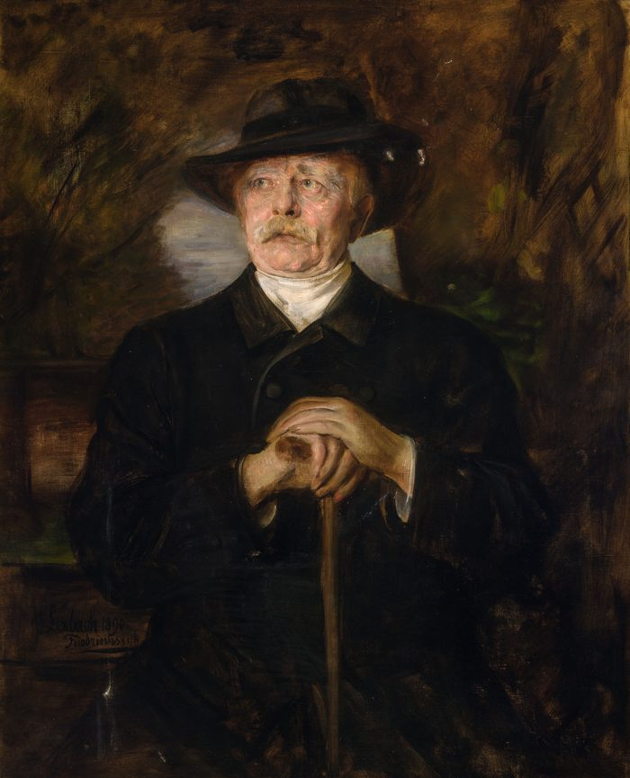

프로이센의 시골 귀족(융커) 출신으로, 1862년 재상이 되자 '오늘의 큰 문제는 연설과 다수결이 아니라 철과 피로 결정된다'는 연설로 시대를 예고했어요. 실제로 덴마크·오스트리아·프랑스와의 전쟁 세 번을 치밀하게 설계해 1871년 독일 통일을 이뤄 냈죠.
놀라운 건 그다음이에요. 통일을 이루자 그는 '독일은 이제 배부른 나라'라며 팽창을 멈추고, 20년 동안 프랑스를 외톨이로 만드는 정교한 동맹망으로 유럽의 평화를 관리했어요. 세계 최초의 사회보험(의료·산재·연금)을 만든 것도 그예요 — 사회주의의 인기를 꺾으려는 계산이긴 했지만, 현대 복지국가의 씨앗이 됐죠.
1890년 젊은 황제 빌헬름 2세에게 해임당했고('조종사를 내리다'), 그가 짜 둔 동맹망은 곧 풀려 버려요. 그는 말년에 '언젠가 발칸의 어리석은 일 하나가 큰 전쟁을 부를 것'이라 경고했다고 전해지는데 — 1914년, 그 말 그대로 됩니다.